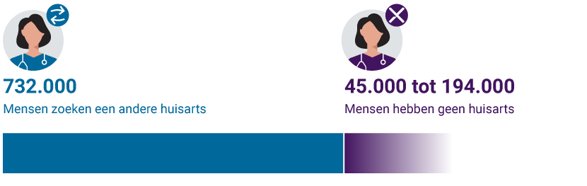

The Team
- Lennard van den Berg
- Jan Philipp Kohrs
- Jan Martijn
- Tobias Termeczky
Het Probleem
Wanneer mensen verhuizen, komt de zorgtoegang in het gedrang
Het Probleem
Ongeveer 1 op 20 Nederlanders zoekt een andere huisarts
Scenario
Pieter is net naar Enschede verhuisd
- Heeft een huisarts in Den Haag (nu ver weg)
- Zoekt een huisarts in Enschede
- Maar de praktijken in Enschede zitten vol 😞
Eddy is net naar Den Haag verhuisd
- Heeft een huisarts in Enschede (nu ver weg)
- Zoekt een huisarts in Den Haag
- Maar de praktijken in Den Haag zitten vol 😞
Het Probleem
🏥 Individuele ruilingen zijn lastig te coördineren
- Mensen weten niet wie hun plek wil
- Er is geen centraal matchesysteem
- Handmatige afstemming kost veel tijd
- Veel mensen blijven vastzitten bij verre huisartsen
De Kans
💡 Wat als we meerdere mensen in een cirkel kunnen matchen?
A → B → C → D → A
Iedereen krijgt wat hij of zij nodig heeft!
De Oplossing
Circulair matching-algoritme in het kort
Hoe het werkt
- Mensen melden hun huidige én gewenste praktijken (max. 10)
- Het algoritme zoekt onmiddellijk naar cirkels van 2‑10 personen
- Iedereen in de cirkel krijgt tegelijk een passende overstap
Waarom dit werkt
✨ Resultaat: iedereen closer bij huis, ruil in één keer geregeld.
- Neo4j-graph vindt patronen razendsnel en verwijdert gematchte personen direct
- Slimme ranking bewaakt voorkeuren en ideale cirkelgrootte
- PostgreSQL bewaart matches, zodat het systeem efficiënt en opgeschoond blijft
Technologiestack in één oogopslag
Backend Matching:
 Hono
HonoNeo4j
 PostgreSQL
PostgreSQL
Huisartsdata:
- Postgres
 Node (geo service)
Node (geo service)- GraphHopper
Frontend:
 React 19
React 19 TanStack Start
TanStack Start shadcn/Radix
shadcn/Radix React Hook Form + Zod
React Hook Form + Zod Tailwind
Tailwind
Infrastructuur:
 Docker Compose
Docker Compose Bruno
Bruno TypeScript/Node.js 22
TypeScript/Node.js 22
Waarom dit werkt
- Snel en type-safe vanaf edge tot database.
- Graphdatabase voor relationele kracht, relationeel voor historie.
- Moderne UI + tooling, klaar voor snelle iteratie en deploy.
Het Matching-Algoritme
Graph-based circular matching met Neo4j
Neo4j Graph Model
Person──CURRENTLY_AT──>PracticePerson──WANTS[order]──>Practice
Cypher zoekt cirkelpatronen:
MATCH (p0)-[:CURRENTLY_AT]->(pr0),
(p0)-[w0:WANTS]->(pr1),
(p1)-[:CURRENTLY_AT]->(pr1),
(p1)-[w1:WANTS]->(pr0)
WHERE p0.id = $personId
RETURN p0, pr0, w0, p1, pr1, w1Ankerpersoon voorkomt combination explosion
Cirkel Voorbeeld (4 personen)
Pieter @ doctor A ──wants──> doctor B @ Maria
↑ ↓
wants wants
↑ ↓
Jan @ doctor D <──wants── doctor C @ Sophie✅ Iedereen krijgt gewenste praktijk tegelijk
Dynamische queries voor groottes 2‑10
Scoring Formule
score = (maxPref × 10) + (totalScore × 1) + (distance × 20)- maxPref × 10: beste individuele voorkeur
- totalScore × 1: totale voorkeur van groep
- distance × 20: afstand tot ideale grootte (5)
Lager = beter match
Workflow
- Zoeken: alle cirkels (2‑10) met ankerpersoon
- Ranking: berkeen score van alle cirkels
- Match: selecteer cirkel met de beste score
- Opslaan: Move naar PostgreSQL voor permanente opslag
- Cleanup: verwijder uit Neo4j, houd graph lean
💡 Neo4j = snelle matching, PostgreSQL = historie
Datastroom samengevat
Flow
-
Registratie – gebruiker meldt huidige praktijk
+ voorkeuren; Neo4j krijgt nodes en
WANTS-relaties. - Async matching – API antwoordt direct, matcher zoekt op achtergrond cirkels van 2‑10 personen.
- Ranking & selectie – beste cirkel gekozen op voorkeursorde, totaalscore en cirkelgrootte.
- Opslag & cleanup – cirkel naar PostgreSQL, pers. en parktijken opgeruimd uit Neo4j,
-
Terughalen – frontend leest resultaten via
/api/matches; Neo4j blijft licht voor nieuwe aanvragen.
Resultaat: snelle feedback én een opgeschoonde graaf na elke succesvolle match.
Ontwikkeltijdlijn
36 uur in het kort
Timeline
- Dag 1 avond – projectstructuur + scraping van 3.000 huisartsrecords, PostgreSQL en Flask-API opgezet.
- Dag 2 ochtend – eerste matchingservice, grote pivot naar TypeScript/Hono, Docker en GraphHopper ingeregeld.
- Dag 2 middag – multi-keuze matching, UI-flow, geo-API's, ID‑gebaseerde data en PDOK-adreslookup toegevoegd.
- Dag 2 avond – frontend↔backend gekoppeld, testdata geladen, algoritmebug gefikst, PostgreSQL-persistentie afgerond.
Statistieken
- 110 commits
- 4 developers
- ~10k regels code
- 5 services
Kernbeslissingen: Neo4j + PostgreSQL, rewrite naar TypeScript, async matching, configureerbare scoring.
Resultaat: van idee naar demo-klaar product in één hackathonweekend.
Belangrijkste features in één lijst
Features
- Slimme matching – Neo4j vindt circulaire ruilen van 2‑10 personen, ranking bewaakt voorkeuren én coördinatie.
- Flexibele voorkeuren – tot 10 praktijken per gebruiker, automatisch fallback zonder slechte matches te forceren.
- Twee-database design – Neo4j voor snelle zoekgraaf, PostgreSQL voor duurzame opslag en rapportage.
- Rijke data & geo – 3.000+ praktijken, PDOK-adressen, Haversine-afstanden en GraphHopper-routes voor relevante suggesties.
-
Heldere API + moderne UI – REST endpoints voor
mensen en cirkels, React/Tailwind frontend, alles startbaar met
docker-compose up. - Observability & veiligheid – uitgebreide logging, healthcheck, rollbackbescherming en configuratie via env-vars voor snelle tuning.
Opgeloste uitdagingen
Uitdagingen
- Technologiewissel – Python/FastAPI → TypeScript/Hono voor betere tooling, typeveiligheid en snelheid.
- Unieke identifiers – overstap van namen naar UUID's + numerieke praktijk-ID's voorkomt botsingen.
- Meer voorkeuren – array van 10 keuzes verhoogt matchkans zonder de kwaliteit te verlagen.
- Query-bug – modulo-fout in cyclusdetectie opgelost, volledige matches gevonden.
- Persistentie – PostgreSQL bewaart cirkels, Neo4j blijft licht; uitrol via Docker-compose.
- Async UX – matching draait op achtergrond, API blijft snel; logging maakt alles traceerbaar.
Demo-scenario's samengevat
Scenario's
- Perfecte cirkel (10 personen) – iedereen wisselt één stap door, alle eerste voorkeuren vervuld.
- Geïsoleerd duo – twee personen ruilen 1-op-1 hun praktijk, meest voorkomende real-life situatie.
- Geen match – iemand wil een niet-bestaande plek, blijft wachten zonder slechte match af te dwingen.
- Multi-keuze succes – mix van tweede/derde voorkeuren levert alsnog een optimale cirkel op.
- Grootte-optimalisatie – scoringssysteem kiest cirkel dicht bij ideale grootte van 5.
- Realistisch verhuisverhaal – Jan ↔ Sophie tonen dat matches automatisch ontstaan zodra puzzel compleet is.
Performance
Interactieve demo:
npm run import:data, personen posten naar
/api/people, resultaten via
/api/matches.
Performancebewijs: 1.000 personen → matching <200 ms, meerdere cirkelgroottes, Neo4j/Pg blijven responsief. Edgecases (iedereen wil dezelfde praktijk, lange ketens) worden correct afgehandeld.
Huidige status
Waar staan we?
Status
- Werkt nu: matching-engine (cirkels 2‑10, configurabel, realtime), Neo4j + PostgreSQL met automatische opschoning, REST-API's en React-frontend draaien via Docker Compose.
- Klaar voor beta: logging, healthcheck en rollbackbescherming aanwezig; documentatie en datasets gereed.
- Nog te doen: authenticatie/autorisatie, uitgebreide testdekking, monitoring & notificaties, gebruikersdashboard.
- Gereedheid: kerntechnologie ~80% productieklaar; productfeatures ~30% – vier maanden tot productie met geplande roadmap.
Toekomstige uitbreidingen
Roadmap
Roadmap (1)
- Maand 1-2: auth & rollen, realtime notificaties (WebSockets/e-mail), testsuite (unit + integratie) en stagingomgeving.
- Maand 3-4: gebruikersdashboard met matchvisualisatie, verfijnde registratieflow, polish van UX en content.
- Maand 5-6: AI-assist (matchkans & suggesties), afstands- en CO₂-metingen, praktijkportaal en mobiele/PWA-ervaring.
Roadmap (2)
- Maand 7-12: integraties met LSP, Zorgkaart, verzekeraars; uitrol naar andere zorgdomeinen; internationalisatie.
- Jaar 2+: schaaloptimalisaties, caching, Kubernetes, nieuwe verdienmodellen (freemium, praktijkabonnement, verzekerings-partners), internationale expansie en onderzoekssamenwerkingen.
Belangrijkste inzichten
In één pagina
Inzichten
- Prestatie: in 36 uur een end-to-end systeem gebouwd – matching-algoritme, data, frontend, infra en logging.
- Techniek: Neo4j + PostgreSQL bewijst zich, TypeScript levert typeveiligheid, async ontwerpen houdt de UX snel.
- Proces: durf te pivotten, documenteer continue, ship klein en vaak, gebruik testdata als versneller.
- Impact: patiënten dichter bij huis, praktijken minder administratie, zorgsysteem efficiënter.
- Volgende stap: auth + monitoring, feedback verwerken en gecontroleerd opschalen.